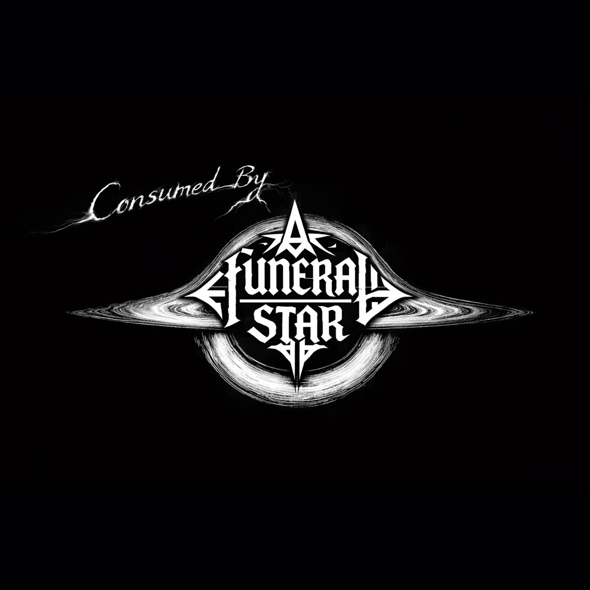

05 / Cosmic Collapse
Dragged Below
Consumed by a Funeral Star
Beneath a silent void, the stars align All reason fades beneath a wretched sign We spiral through obsidian, ash and frost Unknown terrors awakened, sanity lost Dragged below, twisted low Chasms open, horrors grow The sky distorts, the shapes revolt Eyes in the firmament gnaw at the soul Reality fractures, the heavens crack Spirals of madness pull never back Buried screams in cosmic decay Ancient gods, they never stray Beneath a silent void, the stars align All reason fades beneath a wretched sign We spiral through obsidian, ash and frost Unknown terrors awakened, sanity lost Dragged below, twisted low Chasms open, horrors Vast expanses of empty cold Tales of human life untold Cold skin on a frozen throne Tear the flesh and pick the bone Sinking down through the viscous dark The hunter marks a dying spark Parasites in the astral tide There is nowhere left to hide Low! Die! Low! Go! A thousand mouths within the sun A war that never could be won Titan lungs begin to breathe Ancient jaws beneath us seethe Gravity fails and our limbs depart The void is ripping at your heart Final breath in the black Never coming back Never coming back Gone away Gone away The sky is red All is deadBack to discography